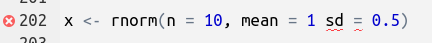

x <- 42 # This will assign the value 42 to the name x21 Bestiary of Brackets and other R notation
!#@%&?
What does that mean?
This page is a guide to decoding what all the non-alphanumeric used in R mean. It covers base R use and the most common uses within tidyverse and related packages.
21.1 Assignment arrows
The usual way to assign an object to a name is to use a left-pointing arrow <-.
The keyboard short-cut for the assign arrow is Alt+-.
It is also possible to use right-pointing arrows ->.
42 -> x # This will assign the value 42 to the name xThis is not recommended for use in scripts because it makes the code difficult to read.
21.2 Backslash
Some characters cannot be directly represented in character strings so an escape sequence is used instead. Escape sequences always start with the backslash character \.
-
\nnew line -
\ttab (very useful for importing tab-delimited files withread_delim) -
\\backslash -
\U1F600including Unicode or emoji 😀
If you want to use a literal backslash in a character string, it needs to be escaped with another backslash. Note that print shows the contents of the string, including the backslashes, while cat shows what would be shows by ggplot etc.
21.3 Brackets
Three different types of bracket are used in R.
The round brackets () are used to contain all the arguments to a function.
rnorm(n = 10, mean = 10)Round brackets () are also used to force the order of operations in an calculation or Boolean logic.
9 * 6 + 5 # 59[1] 599 * (6 + 5) # 99[1] 99Single square brackets [] are used for sub-setting vectors, matrices and similar objects.
month.name[6:7] # extract the 6th and 7th element of month.name[1] "June" "July"penguins[1, "species"] # first element of species column (dplyr gives neater ways to do this)# A tibble: 1 × 1
species
<fct>
1 Adelie Double square brackets are used to extract elements from a list
x <- list(a = 1, b = TRUE)
x[1] # single square bracket returns a list - see the $a$a
[1] 1x[[1]] # double square bracket returns element directly[1] 1Curly brackets or braces {} are used to keep code that needs to be run together as a single expression. This is commonly done when writing a function
cylinder_volume <- function(radius = 1, height){
radius ^ 2 * pi * height
}
cylinder_volume(height = 2)or when writing an if statement
if(logical_condition){
#some code to run if logical_condition is TRUE
}Curly brackets are also used in the glue package, an easy to use alternative to paste. The curly brackets demarcate R code to include in the output.
glue::glue("The penguins dataset has {nrow(penguins)} rows")The penguins dataset has 344 rows[1] "The penguins dataset has 344 rows"Double curly brackets {{}} are used programming with tidyverse. See the dplyr programming vignette for details.
21.4 Boolean operators
Boolean operators are used to combine logical tests.
If a and b are logical vectors (i.e. TRUE and FALSE), or vectors that can be coerced to logical vectors, then
-
!aNOT a -
a & ba AND b -
a | ba OR b
Boolean operators can be combined to form complex statements. Round brackets can be used to force the order of evaluation
x <- 10
x > 0 | x < 20 # is x between 0 and 20[1] TRUEx > 0 | x < 20 & x %% 2 == 1 # is x an odd number between 0 and 20. Wrong order of evaluation.[1] TRUE(x < 20 | x > 0) & x %% 2 == 1 # Brackets force correct order.[1] FALSEIt is probably a good idea to always use brackets in statements with multiple Boolean operators to make the order of evaluation clear to the reader.
You will also see doubled up || and && operators. These are special Boolean operators that only return the first element of any vector of results. This is useful with if statements which want only a single TRUE or FALSE.
21.5 Colons
A single colon : is used to get a sequence between two values with a step size of one.
1:10 [1] 1 2 3 4 5 6 7 8 9 10#equivalent to
seq(from = 1, to = 10, by = 1) [1] 1 2 3 4 5 6 7 8 9 10A single colon is also used when detaching a package which is almost, but not quite, the opposite of running library.
Because detach is not exactly the opposite of library, it is normally better to restart the R session (In Rstudio go to ‘Session’ then ‘Restart R’).
Double colons :: let you use a single function from a package without loading the entire package. For example, readxl::read_excel() will run read_excel(). This can prevent conflicts between functions with the same name in different packages, or make code clearer by being explicit where a function comes from.
Triple colons ::: are used to access a package’s internal functions. This can be useful to access the help file or to view the code, but you should not rely on the internal functions staying the same.
21.6 Commas
Arguments in a function need to be separated by a comma.
x <- rnorm(n = 10, mean = 1, sd = 0.5)If you forget to use a comma, you will get a reminder from R, and Rstudio should underline the problem.
x <- rnorm(n = 10, mean = 1 sd = 0.5)Error: <text>:1:29: unexpected symbol
1: x <- rnorm(n = 10, mean = 1 sd
^
21.7 Dot
The dot . is used as the decimal separator in R, for example in 3.1415927.
Object names can have a dot in them. If the name starts with a dot, the object is invisible and won’t show up in the environment tab in Rstudio.
Dots in function names can be decorative, but can also be used by R to determine which function needs to be used for each type of object. For example, there is a summary.lm() and an anova.lm() which process lm class objects generated by the function lm(). There are also glm(), lme(), and many other versions of these functions available to process different classes of objects. When you run summary() or anova(), which are known as a generic functions, R will automatically select the correct version to use based on the class of object given. You can find out the class of an object my using the function class().
21.8 …
You will often see three dots ... in a function’s arguments. These are used when the name (and number) of arguments is not known in advance. For example, the functionc() has ... in its arguments, allowing you to put any number of objects with any names into the function to make a vector. The three dots are often used by generic functions because the different versions of the function for different classes of object need different arguments. In dplyr, the dots are used for the column names of the data frame or tibble being processed.
21.9 Dollars
The dollar symbol $ is used to subset lists. Many objects in R, including data frames, are special types of lists.
x <- list(a = 1, b = TRUE)
x$a[1] 1penguins$species[1:3] # just the first few elements[1] Adelie Adelie Adelie
Levels: Adelie Chinstrap Gentoo21.10 Equals sign
One equals sign = is used to assign a value to an argument in a function
rnorm(n = 10, mean = 0)One equals sign can be used instead of the assignment arrow, but the intent of the arrow is clearer.
Two equals signs == are used as a test of exact equality. This test is sensitive to numerical impression in floating point numbers (numbers which have a decimal point). It can be safer to use near for numeric values as this has a built in tolerance.
It is a very common mistake to use one equals sign rather than two. filter in dplyr gives a helpful error message
penguins |> filter(year = 2007)Error in `filter()`:
! We detected a named input.
ℹ This usually means that you've used `=` instead of `==`.
ℹ Did you mean `year == 2007`?21.11 File paths
When you want to import data from or save a file to a, a directory (folder) other than the working directory (usually where you RStudio project .rproj file is), you need to specify the path.
The directory name need to be separated from the file name by a forwards slash /.
"my_directory/my_file.csv"If you use a backslash by mistake, you will get an error, because the backslash is the escape character. You will sometimes see a double backslash used as a path separator, but this is not recommended.
You can also use the function file.path() to generate paths to files.
file.path("my_directory", "my_file.csv")[1] "my_directory/my_file.csv"If you want to read a file from the directory above the working directory, you can use ../my_file.csv, where .. means go up one, but you should probably use the here package.
21.12 Formula notation
Formulae are mainly used in regression models, but also in plotting (base plot and facet_wrap()) and some other functions.
Formula always have a tilde ~. The response (if any) goes to the left of the tilde, and the predictors to the right.
Other characters that can be used in formula include * + | / : ^ which take on a different meaning from their usual meaning.
The following linear model has a formula that has bill length as the response and species, year, and the interaction between year and species as predictors.
lm(bill_length_mm ~ species + year + species:year, data = penguins)
Call:
lm(formula = bill_length_mm ~ species + year + species:year,
data = penguins)
Coefficients:
(Intercept) speciesChinstrap speciesGentoo
-1.268e+02 -1.527e+02 -1.390e+03
year speciesChinstrap:year speciesGentoo:year
8.248e-02 8.106e-02 6.963e-01 This model can also be run with the following formulae with more concise notation.
All give exactly the same result.
21.13 Greater than and less than
The greater than > and less than < characters are used in logical tests.
pi > 22/7[1] FALSETo express greater than or equal, use >=. <=, for less than or equal.
The greater than sign is also used in the native pipe |> (and the tidyverse pipe %>%).
21.14 Hash
Any text after a # is a comment.
# this is a commentComments that end with four hashes are treated as section breaks by Rstudio. These are useful for navigating long scripts.
#### this is a section break ####
# Only needs one leading #,
# but symmetry makes code more beautifulIn Rstudio you can use the keyboard short-cut ctrl+shift+c (Windows/Linux) or command+shift+c (Mac) to comment or uncomment multiple lines of code at the same time.
Hashes are also used to indicate hexadecimal (base 16) numbers. These are most often used for colours, with a hash followed by three pairs of digits (0-9, A-F) representing the intensity of the red, green and blue components of the colour (a option extra pair represents alpha or transparency). Large numbers (towards FF, which is 255 when expressed as a decimal number) are more intense than low numbers.
Here are five colours from the viridis colour scale
viridisLite::viridis(n = 5)[1] "#440154FF" "#3B528BFF" "#21908CFF" "#5DC863FF" "#FDE725FF"
If you want to make your own special colours, you can write the hexadecimal string by hand.
21.15 Mathematical operators
Mathematical operators have their usual meaning:
-
a + ba plus b -
-aminus a -
a - ba minus b -
a * ba times b -
a / ba divided by b -
a ^ ba to the power b
Some useful but less commonly seen operators
-
a %% ba remainder b (13 %% 5 = 3). Also called the modulo operator. -
a %/% binteger division (13 %/% 5 = 2).
Some of the mathematical operators are used by tidyverse and associated packages for different purposes.
ggplot2 uses + to add elements of the a plot together
p_box <- ggplot(penguins, aes(x = species, y = bill_length_mm)) +
geom_boxplot() +
labs(x = "Species", y = "Bill length mm")patchwork uses + and / to arrange separate plots into one combined plot, and uses & to modify all the plots.

21.16 Percent signs
Percent signs come in pairs and surround an infix operator. An infix operator is a special type of function that goes between two operands. For example, the integer division operator 13 %/% 5. This can be re-written as a regular function with `%/%`(13, 5)
Some important infix operators are
-
%%remainder or modulo operator -
%/%integer division -
%in%matching operator which tests if the elements of the first vector are in the second vector.
[1] TRUE FALSE#equivalent to, but much neater than
x == "January" | x == "February" | x == "March" # etc[1] TRUE FALSE-
%*%matrix multiplication -
%>%the tidyverse pipe
If you want to get help on any infix operator, you need to surround it in backticks or you get the error unexpected SPECIAL in "?%in%"
?`%in%`21.17 Quote marks
Strings in R need to be surrounded by quote marks. You can use single or double quote marks. If your string contains quotes, they either need to be the opposite type from those around the string, or escaped with a backslash (see Section 21.2).
x <- "cat" # double quote marks
x <- 'cat' # single quote marks
x <- "She said 'The cat.'" # single quote marks nested in double quotes
x <- "She said \"The cat.\"" # escaped quote marksThe backtick ` looks a little bit like a small quote mark. They are used to enclose names that are not legal R names.
tibble(`Standard Deviation` = 2)# A tibble: 1 × 1
`Standard Deviation`
<dbl>
1 221.18 Question marks
Use a ? to get help on a function, for example ?lm, which is equivalent to help(lm) Or ?? to get help on a topic, for example ??"linear models", which is equivalent to help.search("linear models").
If you want help on something that does not start with a letter or dot, you need to surround it in backticks, for example ?`+.
21.19 Regular expressions
Several characters take on a special meaning with regular expressions, including ^ $ ? * + () [] {} :. Regular expressions are always enclosed in quote marks. See the tutorial on text manipulation for an introduction into regular expressions.
21.20 Semi-colon
The semi-colon ; can optionally be used at the end of a line of code, but there is no advantage to doing this (in other languages it can be compulsory). It can be used to separate two R statements on the same line. This is not recommended as it can make code difficult to read.
21.21 Underscore
The underscore _ can be used in object names along with alphanumeric characters and dot. It cannot be the first character of the name. It is useful as a word separator in snake_case.
21.22 White space
White space is free and usually has no impact on how the code runs. Use lots of it to make your code more readable.
21.23 @
You will occasionally see an @ in R code. They are used to subset S4 class objects, analogous to the use of $ to subset lists and data frames. Unless you are coding your own S4 classes, you probably won’t see or use @ very often. See Chapter 15 of Advanced R for more information about S4 classes.
Contributors
- Richard Telford